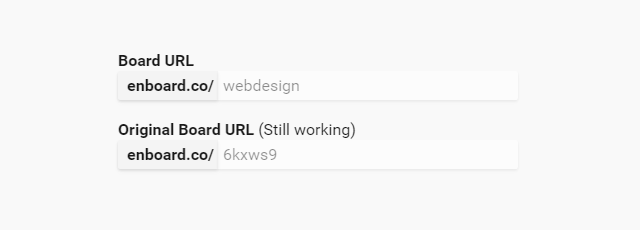
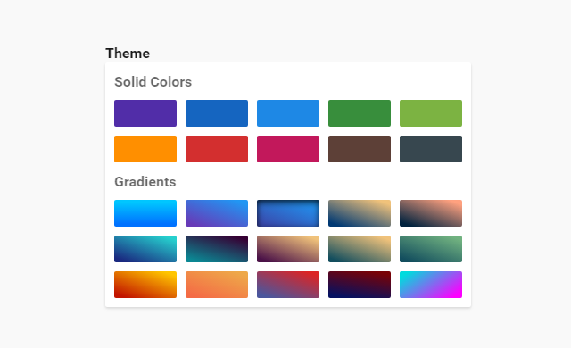

How I've created Enboard — a case study
If you want to know how to create application such as Enboard or you're interested in my workflow then you should read this.
This article consists of two parts. First is about design and second is about technical matters. If you aren't interested in design then just skip that part.
I want to point out that it's my first ever written article and it won't be perfect (English is my second language) and not as complete as I would like it to be.

History and Idea
After I've started my web design adventure I have amassed a big number of related bookmarks with articles, fonts, services, etc. Organizing everything and accessing it with a browser default bookmarks manager was getting really tiring so I've looked into some bookmark managing services like Delicious etc. but unfortunately nothing cut it for me.
That's when I've got an idea to create a simple static page hosted on GitHub where I could keep all my bookmarks organized through categories in a way I liked to. I've named it DopeLists.com and at the beginning it was only about web design. Later on I've added other sections like front-end, after format and general websites.
I've later redesigned and refactored it a bit, because of bad markup decisions and time-wasting way of adding new links. Name was also changed (again) to Beaqn.in.
The website got a bit popular, shared many times and received good amount of e-mails with positive feedback and suggestions.
Among the user feedback there were many questions if Beaqn source code could be used for their own lists. That's how I've got an idea to create such web app where people could do exactly that, but without messing in code.

Board Design & Features
URL Design
Boards are using top level directory after domain name because I wanted them to be memorable and easily accessible.
Every new board comes with a 6-character long unique alphanumeric string. The owners can add another custom slug which is not taken by another board and not used by other restricted Enboard URLs.
That way board creation is faster and people who don't need specific board aliases (e.g. in private boards) aren't forced to take names that could be used by other users.
Header
Loosely in the spirit of a separation of concerns — there are two sections inside board header. First one is mostly informational with things like board title, description, number of followers, etc. Second one contains options associated with that board.
Only exception is the follow button which I've included right after the board title because I wanted it to be more visible and used more often than the other options.
Layout
To keep things simple and clean, board is reduced to only essentials — items with optional hover descriptions organized through categories.
That results in a glanceable and optimally packed content that can be quickly explored and accessed by users.
Content Edition
Adding new links is almost effortless, they have dynamically auto-filled titles and descriptions scraped from websites titles and descriptions.
Drag and drop interface lets board owners to easily edit placement of categories and items.
Search
Every board have a search functionality. It basically works like a browser find feature (this little thing activated with CMD+F) but with one difference — boxes that don't match search results are hidden.
Suggestions
Everyone can make suggestions to public boards. Boards owners are notified when suggestion is sent and then can review and delete them. Suggestions are also automatically marked for read and unread.
Changelog
Items addition, modification or deletion gets logged in the changelog that can be seen by anyone with board access.
Different types of actions have different icons and are color coded for quicker scanning. Useful when there's lots of them.

Technology & Development
Server Set-Up
All the application code, static files and PostgreSQL databases are hosted on a Ubuntu 14.04 Linode VPS.
For web server I've chosen Nginx because it was easier to configure and from my research it was better suited for Django applications and overall more faster than Apache. It serves two purposes — first is a proxy to a Gunicorn which executes Enboard application and second is a server for static files.
Upstart is automatically stopping or starting Enboard application on system events like boot-ups or crashes.
In addition I'm using CloudFlare, which is basically a plug-and-play location sensitive CDN, cache, security protection and some other things. It also lets visitor know when the website is down.
Deployment
I was working on Enboard all by myself and I wanted to have fast deployment flow since I knew I'll reiterate and update Enboard couple times a week so I didn't used any deployment tools. Instead I've opted for a simple GIT deployment, where I push local changes to BitBucket repository and pull them from Linode server.
My usual deployment flow looked like this:
- Update code and merge GIT branches.
- Change static files versions using GET
?v=parameter at the end of links to files so that end users will get fresh styles and scripts. git pushfrom local development set-up.git pullinside server.- Database migration — if necessary.
- Static files collect.
- CloudFlare cache clear.
- Application restart.
Front-End Structure & Builds
My CSS preprocessor of choice is Sass. Thanks to its import feature it let me to have modular CSS structure based on BEM methodology and loosely on SMACSS. Sass other features like mixins, variables and logic operators also came in handy.
In addition I've used Autoprefixer postprocessor — that way I didn't have to worry about manually adding browser vendor prefixes like -webkit- or -ms-.
Board Themes
Every board can be customized with 25 themes. Themes only change board headers, items icons and items description background.
They are implemented with the help of Sass mixin and icon fonts features. This lets me to quckly add new themes and easily change whole board theme using only one class in <html> that overwrites colors of specified elements.
Performance Optimizations
From the beginning I've wanted to make Enboard very fast. I've implemented couple of techniques that improved normal and perceived load times.
"Speed is the most important feature. If your application is slow, people won’t use it."
All relevant file extensions are cached and gzip compressed using Nginx and HTML pages are minified using Django bult-in filter.
Stylesheets and scripts are concatenated and minified using Gulp build into 3 files to reduce network requests — global stylesheet, dependency scripts and scripts controlling the application.
Speeding Up Boards Perceived Loading Times
Bigger boards had a very long server response times because they contained a lot of items with many database relationships.
I've solved that issue by getting items using AJAX after initial page load. While it didn't solve the response time issues, it made the first request for website look a lot faster.
To take things a step further I've also deferred other loadings like board creator and changelog.
Making Fonts Lazy & Using Icon Fonts
To fight something called FOIT (flash of invisible text) I've plugged in a neat script called Font Observer that — as the name suggests — is observing font load requests and returns callbacks that make possible to apply custom font only after it's loaded.
Really useful, especially on smartphones where font loads aren't that snappy like on desktops.
While we are speaking about fonts, we may also speak about icon fonts.
I've used selected entypo+ icons packaged as a font. This resulted in the only one ~13kb request for all of the icons. Because they are vector based, they look crisp on high-density displays and also let me to easily customize their color and other properties.
Reducing Network Requests with Share Buttons
To miminize page load speeds, especially on smartphones I've decided to not use any external sharing widgets since they are really big performance hogs with their bloated scripts and iframes.
I've gone with more lightweight solution. I've used custom sharing buttons that open sharing dialog with "sharer" urls in new popup window.
https://twitter.com/share?url=http://enboard.co/frontend/&text=Front%20End%20Resources&via=enboardcoFor displaying cumulative share numbers I've used custom back-end script that counts shares every 6 hours using selected APIs of social networks. The final share number is updated in database only when it's larger than preceding number.
Analytics & User Feedback
For tracking traffic and other stats I'm just using the ol' plain Google Analytics.
For tracking user bahavior and gathering feedback I'm using HotJar. It's a really useful tool that I could describe as a "swiss knife" of analytics.
On Enboard click heatmaps and screen recordings were used to detect and solve usabilty issues along with polls and surveys to gather feedback.
Things That Should've Been
Enboard obviously lacks some things. There's no proper landing page, no sitewide search, no profile pages and editing large boards needs some performance improvements.
I might implement them in future but right now I've had to stop working on Enboard and to focus on other things that are going in my life and on other projects.
Co-Founding
If you are a business guy, marketing guy, front-end developer or Django developer — or even mix of those — and you would like to work on Enboard as a co-founder then please contact me.
Resources
Enboard couldn't be made single-handedly in such a short span amount of time without articles, libraries, tools and services listed below.
Articles
- Font Loading Revisited with Font Events by filament group
- Deploying Django 1.7 on Ubuntu with DigitalOcean by Adam Beagle
Design
Front-End
Back-End
Services
Tools